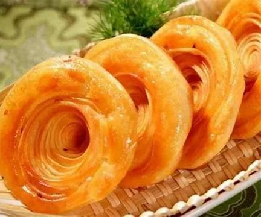

舌尖上的非遗｜寻找济南文化符号——济南油旋
发布时间: 2022-04-07 4859 次浏览
-
山东济南，素以泉水众多，风景秀丽而闻名天下。济南不仅有好看的景色，还有很多特色美食，许多文人墨客还为这些美食、美景题过字。
有人说，“闻到那个味，想起济南府。”每个老济南人的味蕾往往有他们自己的偏爱。一碗豆浆、一个油旋，这是属于老济南人的味道。作为非物质文化遗产，油旋已成为泉城济南的特色美食，也体现着百年来老济南人对传统的偏爱。
来济南，油旋是一定不能错过的小吃。油旋又叫“油旋回”，是济南特色传统名吃。外皮酥脆，内瓤柔嫩，葱香透鼻，因其形状像螺旋，表面油润呈金黄色，故名油旋。
 相传，油旋是清朝时期的徐氏三兄弟（今齐河县）去南方闯荡时在南京学来的，油旋在南方的口味是甜的，徐氏兄弟来济南后依据北方人的饮食特点将油旋的口味改成咸香味，一直传承至今。清代顾仲编著的《养小录》中这样记载油旋的制作：“……和面作剂，擀开。再入油成剂，擀开。再入油成剂，再擀如此七次。灶烙之，甚美。”
相传，油旋是清朝时期的徐氏三兄弟（今齐河县）去南方闯荡时在南京学来的，油旋在南方的口味是甜的，徐氏兄弟来济南后依据北方人的饮食特点将油旋的口味改成咸香味，一直传承至今。清代顾仲编著的《养小录》中这样记载油旋的制作：“……和面作剂，擀开。再入油成剂，擀开。再入油成剂，再擀如此七次。灶烙之，甚美。”
油旋最讲究的当属和面。用古法的技艺“搋、叠、打”进行上百次的重复，最后使面团光滑，不粘手，又不粘擀面轴时才可继续下面的步骤。将近60层的面皮酥脆，经过济南泉水浸润的内里更是柔软如絮，夹杂着的章丘大葱香气弥漫。一碗鸡丝馄饨加热腾腾的油旋，开启了济南人一天的忙碌，各种滋味，妙不可言。
各式早点几乎都有自己的“黄金搭档”，就如油条搭配豆浆。油璇有着一个“好伴侣”，那就是被誉为济南两大怪之一的甜沫。“来俩油旋儿，一碗甜沫。”这大概是在济南街边早餐摊上听过最多的话了。
刚出炉的油旋外酥里嫩，咬一口，脆生生到软绵绵全有了。油旋必须趁热吃，凉了，就塌了架，生动不起来；再吃，味同嚼蜡。更有精细者，在油旋成熟后捅一空洞，磕入一个鸡蛋，再入炉烘烤一会，鸡蛋与油旋成为一体，食之更美。
黄河文化旅游宣传平台
联系电话: 17753010787
版权所有：山东大学技术团队
技术支持：山东大学技术团队